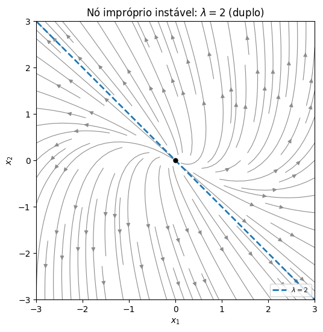
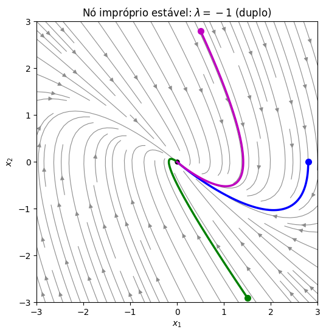

Autovalores Repetidos#
O último caso é quando a matriz tem um autovalor repetido. Para uma matriz \(2\times2\), isso acontece quando \(\Delta=(\operatorname{tr}A)^2-4\det A=0\), e então \(\lambda=\tfrac12\operatorname{tr}A\) é raiz dupla. Como vimos na aula de autovalores, há duas possibilidades:
o autovalor duplo tem dois autovetores independentes — e então não há problema nenhum;
o autovalor duplo tem um só autovetor (a matriz é chamada defeituosa) — e então falta uma solução.
O segundo caso é o análogo exato das raízes repetidas na segunda ordem, e a solução também vai envolver um fator \(t\).
import numpy as np
import matplotlib.pyplot as plt
import sympy as sp
from scipy.integrate import solve_ivp
def retrato(A, ax, lim=3, titulo=None, autovetores=True):
# Desenha o retrato de fase de x' = A x no quadrado [-lim, lim]^2
A = np.array(A, dtype=float)
s = np.linspace(-lim, lim, 40)
X, Y = np.meshgrid(s, s)
U = A[0, 0]*X + A[0, 1]*Y
V = A[1, 0]*X + A[1, 1]*Y
ax.streamplot(X, Y, U, V, color='0.55', density=1.1, linewidth=0.8, arrowsize=1)
if autovetores:
lam, vec = np.linalg.eig(A)
if np.all(np.abs(lam.imag) < 1e-12):
pares = list(zip(lam.real, vec.T.real))
if abs(lam[0] - lam[1]) < 1e-6:
pares = pares[:1]
for l, v in pares:
ax.plot([-3*lim*v[0], 3*lim*v[0]], [-3*lim*v[1], 3*lim*v[1]],
'--', linewidth=2, label=fr'$\lambda={l:.3g}$')
ax.legend(loc='lower right', fontsize=8)
ax.plot(0, 0, 'ko', markersize=5)
ax.set_xlim(-lim, lim); ax.set_ylim(-lim, lim); ax.set_aspect('equal')
ax.set_xlabel('$x_1$'); ax.set_ylabel('$x_2$')
if titulo:
ax.set_title(titulo)
def trajetoria(A, x0, T, ax, cor='b'):
# Integra x' = A x a partir de x0 e desenha a trajetória
A = np.array(A, dtype=float)
sol = solve_ivp(lambda t, x: A @ x, (0, T), x0, max_step=T/500)
ax.plot(sol.y[0], sol.y[1], color=cor, linewidth=2.5)
ax.plot(x0[0], x0[1], 'o', color=cor, markersize=7)
return sol
Primeiro caso: dois autovetores#
Se \(\lambda\) é duplo e tem dois autovetores independentes \(\mathbf{v}^{(1)},\mathbf{v}^{(2)}\), a receita de sempre funciona: \(\mathbf{x}(t)=c_1\mathbf{v}^{(1)}e^{\lambda t}+c_2\mathbf{v}^{(2)}e^{\lambda t}\). Para uma matriz \(2\times2\), isso só acontece se \(A=\lambda I\) (múltiplo da identidade), e então todo vetor é autovetor. Por exemplo, para \(A=\begin{pmatrix} -1 & 0\\ 0 & -1\end{pmatrix}\), o sistema é \(x_1'=-x_1,\ x_2'=-x_2\), com solução \(\mathbf{x}(t)=e^{-t}\begin{pmatrix} c_1\\ c_2\end{pmatrix}\): todas as soluções vão em linha reta para a origem. Esse retrato é chamado de nó próprio (ou estrela). (Já vimos, na aula de autovalores reais, um exemplo \(3\times3\) desse tipo, em que o autovalor duplo também tinha dois autovetores.)
Segundo caso: um só autovetor#
Exemplo 1#
Encontre a solução geral de
Autovalores: \(\operatorname{tr}A=4\) e \(\det A=3+1=4\), então \(\lambda^2-4\lambda+4=(\lambda-2)^2=0\) e \(\lambda=2\) é duplo.
Autovetores: \((A-2I)\mathbf{v}=\begin{pmatrix} -1 & -1\\ 1 & 1\end{pmatrix}\mathbf{v}=\mathbf{0}\) dá apenas \(v_1+v_2=0\), ou seja, só a direção \(\mathbf{v}=\begin{pmatrix} 1\\ -1\end{pmatrix}\). Temos uma solução, \(\mathbf{x}^{(1)}(t)=\begin{pmatrix} 1\\ -1\end{pmatrix}e^{2t}\), e precisamos de outra.
Procurando a segunda solução. Inspirados na segunda ordem, onde a segunda solução era \(te^{rt}\), poderíamos tentar \(\mathbf{x}=te^{\lambda t}\mathbf{v}\). Mas isso não funciona (derivando sobra um termo \(e^{\lambda t}\mathbf{v}\) que não se cancela). A correção é acrescentar mais um termo:
com \(\mathbf{w}\) um vetor constante a determinar. Derivando,
e, do outro lado, usando \(A\mathbf{v}=\lambda\mathbf{v}\),
Igualando e cancelando \(\lambda te^{\lambda t}\mathbf{v}\) e \(e^{\lambda t}\), sobra \(\mathbf{v}+\lambda\mathbf{w}=A\mathbf{w}\), ou seja,
Um sistema linear não homogêneo para \(\mathbf{w}\), com a mesma matriz singular \(A-\lambda I\) e o autovetor do lado direito. O vetor \(\mathbf{w}\) é chamado de autovetor generalizado.
Voltando ao exemplo: \((A-2I)\mathbf{w}=\begin{pmatrix} -1 & -1\\ 1 & 1\end{pmatrix}\begin{pmatrix} w_1\\ w_2\end{pmatrix}=\begin{pmatrix} 1\\ -1\end{pmatrix}\) dá a única condição \(-w_1-w_2=1\). Qualquer solução serve; escolhendo \(w_1=0\), temos \(\mathbf{w}=\begin{pmatrix} 0\\ -1\end{pmatrix}\). (Escolhas diferentes de \(\mathbf{w}\) diferem por um múltiplo de \(\mathbf{v}\), que só muda a constante \(c_1\).)
Solução geral:
t, c1, c2 = sp.symbols('t c1 c2')
A = sp.Matrix([[1, -1], [1, 3]])
v = sp.Matrix([1, -1]); w = sp.Matrix([0, -1])
print("(A - 2I) w =", ((A - 2*sp.eye(2))*w).T, " (deve ser v)")
x2 = v*t*sp.exp(2*t) + w*sp.exp(2*t)
print("segunda solução é solução?", sp.simplify(x2.diff(t) - A*x2).T)
print("W(0) =", sp.Matrix.hstack(v, w).det())
fig, ax = plt.subplots(figsize=(6, 6))
retrato(np.array(A, dtype=float), ax, lim=3, titulo=r"Nó impróprio instável: $\lambda=2$ (duplo)")
plt.show()
(A - 2I) w = Matrix([[1, -1]]) (deve ser v)
segunda solução é solução? Matrix([[0, 0]])
W(0) = -1

O retrato de fase tem uma única reta invariante (a do autovetor), e todas as trajetórias saem da origem tangentes a ela, curvando-se para acompanhar a mesma direção quando se afastam. É o nó impróprio (ou nó degenerado), que aqui é instável, pois \(\lambda=2>0\). Ele é o caso de transição entre um nó (dois autovetores reais) e um foco (autovalores complexos): as trajetórias «quase giram», mas não chegam a dar a volta.
Exemplo 2: o amortecimento crítico#
Encontre a solução geral do oscilador criticamente amortecido \(x''+2x'+x=0\), escrito como sistema:
Aqui \(\operatorname{tr}A=-2\), \(\det A=1\) e \(\Delta=4-4=0\): \(\lambda=-1\) é duplo, como esperado para o amortecimento crítico. Os autovetores: \((A+I)\mathbf{v}=\begin{pmatrix} 1 & 1\\ -1 & -1\end{pmatrix}\mathbf{v}=\mathbf{0}\) dá só \(\mathbf{v}=\begin{pmatrix} 1\\ -1\end{pmatrix}\). O autovetor generalizado: \((A+I)\mathbf{w}=\mathbf{v}\) dá \(w_1+w_2=1\), e escolhemos \(\mathbf{w}=\begin{pmatrix} 1\\ 0\end{pmatrix}\). Então
A primeira componente é \(x(t)=(c_1+c_2)e^{-t}+c_2te^{-t}\): exatamente a forma \((C_1+C_2t)e^{-t}\) que encontramos para raízes repetidas na segunda ordem. O fator \(t\) da segunda ordem e o autovetor generalizado do sistema são a mesma coisa, vista de dois ângulos.
A = np.array([[0, 1], [-1, -2]])
fig, ax = plt.subplots(figsize=(6, 6))
retrato(A, ax, lim=3, titulo=r"Nó impróprio estável: $\lambda=-1$ (duplo)")
for x0, cor in [([2.8, 0], 'b'), ([1.5, -2.9], 'g'), ([0.5, 2.8], 'm')]:
trajetoria(A, x0, 12, ax, cor=cor)
plt.show()

Agora \(\lambda=-1<0\): todas as trajetórias vão para a origem, chegando tangentes ao autovetor. É um nó impróprio estável, e a origem é assintoticamente estável. Repare na trajetória verde, que começa com a massa sendo lançada com velocidade forte em direção ao equilíbrio: ela cruza o eixo vertical (\(x=0\)) uma vez antes de chegar à origem (a massa passa uma vez pela posição de equilíbrio). Mas nenhuma trajetória dá a volta na origem — esse é o comportamento do amortecimento crítico.
Em sistemas \(3\times3\), um autovalor pode aparecer até três vezes, e então pode ser preciso um termo com \(t^2\); não vamos tratar esse caso.
Resumo: autovalor repetido (\(2\times2\))#
Se \(\lambda\) é autovalor duplo:
com dois autovetores (\(A=\lambda I\)): \(\mathbf{x}(t)=e^{\lambda t}\mathbf{c}\), retrato de nó próprio (estrela);
com um só autovetor \(\mathbf{v}\): encontre \(\mathbf{w}\) com \((A-\lambda I)\mathbf{w}=\mathbf{v}\), e $\( \mathbf{x}(t) = c_1\mathbf{v}e^{\lambda t} + c_2\big(\mathbf{v}te^{\lambda t} + \mathbf{w}e^{\lambda t}\big), \)$ com retrato de nó impróprio.
Em ambos os casos, a estabilidade depende só do sinal de \(\lambda\): \(\lambda<0\) assintoticamente estável, \(\lambda>0\) instável. (O fator \(t\) não muda isso: \(te^{\lambda t}\to0\) quando \(\lambda<0\), porque a exponencial «vence» o \(t\).)
Ligação com traço e determinante. Autovalor repetido acontece exatamente quando \((\operatorname{tr}A)^2=4\det A\), e então \(\lambda=\tfrac12\operatorname{tr}A\): o sinal do traço decide a estabilidade.